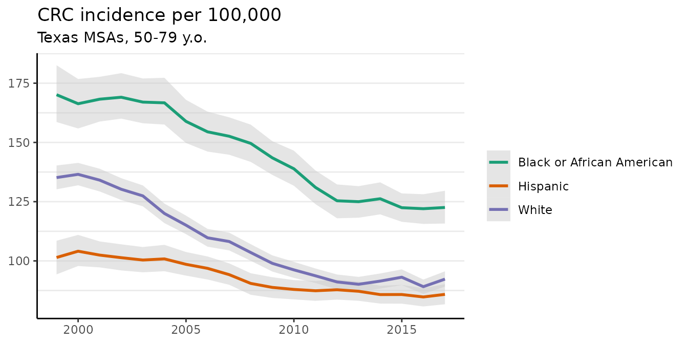

This vignette demonstrates basic usage of surveil for public health research. The package is designed for routine time trend analysis, namely for time trends in disease incidence rates or mortality rates. Models were built using the Stan modeling language for Bayesian inference with Markov chain Monte Carlo (MCMC), but users only need to be familiar with the R language.
The package also contains special methods for age-standardization, printing and plotting model results, and for measuring and visualizing health inequalities. For age-standardization see vignette("age-standardization"). For discussion and demonstration analysis see Donegan, Hughes, and Lee (2022).
Getting started
To use the models provided by surveil, the surveillance data minimally must contain case counts, population at risk estimates, and a discrete time period variable. The data may also include one or more grouping variables, such as race-ethnicity. Time periods should consist of equally spaced intervals.
This vignette analyzes colorectal cancer incidence data by race-ethnicity, year, and Texas MSA for ages 50-79 (data obtained from CDC Wonder). The race-ethnicity grouping includes (non-Hispanic) black, (non-Hispanic) white, and Hispanic, and the MSAs include those centered on the cities of Austin, Dallas, Houston, and San Antonio.
head(msa) |>
kable(booktabs = TRUE,
caption = "Glimpse of colorectal cancer incidence data (CDC Wonder)") | Year | Race | MSA | Count | Population |
|---|---|---|---|---|
| 1999 | Black or African American | Austin-Round Rock, TX | 28 | 14421 |
| 2000 | Black or African American | Austin-Round Rock, TX | 16 | 15215 |
| 2001 | Black or African American | Austin-Round Rock, TX | 22 | 16000 |
| 2002 | Black or African American | Austin-Round Rock, TX | 24 | 16694 |
| 2003 | Black or African American | Austin-Round Rock, TX | 34 | 17513 |
| 2004 | Black or African American | Austin-Round Rock, TX | 26 | 18429 |
The primary function in surveil is stan_rw, which fits random walk models to surveillance data. The function is expects the user to provide a data.frame with specific column names. There must be one column named Count containing case counts, and another column named Population, containing the sizes of the populations at risk. The user must provide the name of the column containing the time period (the default is time = Year, to match CDC Wonder data). Optionally, one can provide a grouping factor. For the MSA data printed above, the grouping column is Race and the time column is Year.
Preparing the data
We will demonstrate using aggregated CRC cases across Texas’s top four MSAs. The msa data from CDC Wonder already has the necessary format (column names and contents), but these data are dis-aggregated by MSA. So for this analysis, we first group the data by year and race, and then combine cases across MSAs.
The following code chunk aggregates the data by year and race-ethnicity:
The following code provides a glimpse of the aggregated data:
head(msa2) |>
kable(booktabs = TRUE,
caption = "Glimpse of aggregated Texas metropolitan CRC cases, by race and year")| Year | Race | Count | Population |
|---|---|---|---|
| 1999 | Black or African American | 471 | 270430 |
| 2000 | Black or African American | 455 | 283280 |
| 2001 | Black or African American | 505 | 298287 |
| 2002 | Black or African American | 539 | 313133 |
| 2003 | Black or African American | 546 | 329481 |
| 2004 | Black or African American | 602 | 346886 |
Model specification
The basics
The base surveil model is specified as follows. The Poisson model is used as the likelihood: the probability of observing a given number of cases, \(y_t\), conditional on a given level of risk, \(e^{\phi_t}\), and known population at risk, \(p_t\), is: \[y_t \sim \text{Pois}(p_t \cdot e^{\phi_t})\] where \(t\) indexes the time period.
Next, we need a model for the log-rates, \({\phi_t}\). The first-difference prior states that our expectation for the log-rate at any time is its previous value, and we assign a normal probability distribution to deviations from the previous value (Clayton 1996). This is also known as the random-walk prior: \[\phi_t \sim \text{Gau}(\phi_{t-1}, \tau^2)\] This places higher probability on a smooth trend through time, specifically implying that underlying disease risk tends to have less variation than crude incidence.
The log-risk for time \(t=1\) has no previous value to anchor its expectation; thus, we assign a prior probability distribution directly to \(\phi_1\). For this prior, surveil uses a normal distribution. The scale parameter, \(\tau\), also requires a prior distribution, and again surveil uses a normal model which is diffuse relative to the log incidence rates.
Binomial model
In addition to the Poisson model, the binomial model is also available: \[y_t \sim \text{Binom}(p_t \cdot g^{-1}(\phi_t))\] where \(g\) is the logit function and \(g^{-1}(x) = \frac{exp(x)}{1 + exp(x)}\) (the inverse-logit function). If the binomial model is used the rest of the model remains the same as stated above. The Poisson model is typically preferred for rare events (such as rates below .01), otherwise the binomial model is usually more appropriate. The remainder of this vignette will proceed using the Poisson model only.
Fitting the model
The time series model is fit by passing surveillance data to the stan_rw function. Here, Year and Race indicate the appropriate time and grouping columns in the msa2 data frame.
fit <- stan_rw(msa2, time = Year, group = Race, iter = 1e3)
#> Distribution: normal
#> Distribution: normal
#> Warning: Bulk Effective Samples Size (ESS) is too low, indicating posterior means and medians may be unreliable.
#> Running the chains for more iterations may help. See
#> https://mc-stan.org/misc/warnings.html#bulk-ess
#> [1] "Setting normal prior(s) for eta_1: "
#> location scale
#> -6 5
#> [1] "\nSetting half-normal prior for sigma: "
#> location scale
#> 0 1
#>
#> SAMPLING FOR MODEL 'RW' NOW (CHAIN 1).
#> Chain 1:
#> Chain 1: Gradient evaluation took 2.6e-05 seconds
#> Chain 1: 1000 transitions using 10 leapfrog steps per transition would take 0.26 seconds.
#> Chain 1: Adjust your expectations accordingly!
#> Chain 1:
#> Chain 1:
#> Chain 1: Iteration: 1 / 1000 [ 0%] (Warmup)
#> Chain 1: Iteration: 501 / 1000 [ 50%] (Sampling)
#> Chain 1: Iteration: 1000 / 1000 [100%] (Sampling)
#> Chain 1:
#> Chain 1: Elapsed Time: 0.259 seconds (Warm-up)
#> Chain 1: 0.168 seconds (Sampling)
#> Chain 1: 0.427 seconds (Total)
#> Chain 1:
#>
#> SAMPLING FOR MODEL 'RW' NOW (CHAIN 2).
#> Chain 2:
#> Chain 2: Gradient evaluation took 1.4e-05 seconds
#> Chain 2: 1000 transitions using 10 leapfrog steps per transition would take 0.14 seconds.
#> Chain 2: Adjust your expectations accordingly!
#> Chain 2:
#> Chain 2:
#> Chain 2: Iteration: 1 / 1000 [ 0%] (Warmup)
#> Chain 2: Iteration: 501 / 1000 [ 50%] (Sampling)
#> Chain 2: Iteration: 1000 / 1000 [100%] (Sampling)
#> Chain 2:
#> Chain 2: Elapsed Time: 0.274 seconds (Warm-up)
#> Chain 2: 0.167 seconds (Sampling)
#> Chain 2: 0.441 seconds (Total)
#> Chain 2:
#>
#> SAMPLING FOR MODEL 'RW' NOW (CHAIN 3).
#> Chain 3:
#> Chain 3: Gradient evaluation took 1.3e-05 seconds
#> Chain 3: 1000 transitions using 10 leapfrog steps per transition would take 0.13 seconds.
#> Chain 3: Adjust your expectations accordingly!
#> Chain 3:
#> Chain 3:
#> Chain 3: Iteration: 1 / 1000 [ 0%] (Warmup)
#> Chain 3: Iteration: 501 / 1000 [ 50%] (Sampling)
#> Chain 3: Iteration: 1000 / 1000 [100%] (Sampling)
#> Chain 3:
#> Chain 3: Elapsed Time: 0.295 seconds (Warm-up)
#> Chain 3: 0.166 seconds (Sampling)
#> Chain 3: 0.461 seconds (Total)
#> Chain 3:
#>
#> SAMPLING FOR MODEL 'RW' NOW (CHAIN 4).
#> Chain 4:
#> Chain 4: Gradient evaluation took 1.3e-05 seconds
#> Chain 4: 1000 transitions using 10 leapfrog steps per transition would take 0.13 seconds.
#> Chain 4: Adjust your expectations accordingly!
#> Chain 4:
#> Chain 4:
#> Chain 4: Iteration: 1 / 1000 [ 0%] (Warmup)
#> Chain 4: Iteration: 501 / 1000 [ 50%] (Sampling)
#> Chain 4: Iteration: 1000 / 1000 [100%] (Sampling)
#> Chain 4:
#> Chain 4: Elapsed Time: 0.231 seconds (Warm-up)
#> Chain 4: 0.187 seconds (Sampling)
#> Chain 4: 0.418 seconds (Total)
#> Chain 4:The iter = 1e3 line controls how long the MCMC sampling continues for (in this case, 1,000 samples: 500 warmup, then 500 more for inference). The default is 3,000, which is more than sufficient for this example model. By default, there are four independent MCMC chains each with 500 post-warmup samples (for a total of 2,000 MCMC samples used for the estimates).
To speed things up, we could take advantage of parallel processing using the cores argument (e.g., add cores = 4) to run on 4 cores simultaneously. You can suppress the messages seen above by adding refresh = 0.
Printing results
The print method will print the estimates with 95% credible intervals to the console; adding scale = 100e3 will display rates per 100,000:
print(fit, scale = 100e3)
#> Summary of surveil model results
#> Time periods: 19
#> Grouping variable: Race
#> Correlation matrix: FALSE
#> time Race mean lwr_2.5 upr_97.5
#> 1 1999 Black or African American 170.13800 158.60949 182.58447
#> 2 2000 Black or African American 166.33702 155.88914 176.76747
#> 3 2001 Black or African American 168.25295 158.81048 177.69848
#> 4 2002 Black or African American 169.07328 160.04227 179.24671
#> 5 2003 Black or African American 167.02063 158.09334 176.99671
#> 6 2004 Black or African American 166.71714 157.53935 177.28653
#> 7 2005 Black or African American 158.87722 149.76657 167.98056
#> 8 2006 Black or African American 154.47016 146.12883 162.99275
#> 9 2007 Black or African American 152.61372 144.80630 160.59970
#> 10 2008 Black or African American 149.59718 141.78290 157.51917
#> 11 2009 Black or African American 143.50158 136.30690 150.52598
#> 12 2010 Black or African American 138.88031 131.71338 146.52430
#> 13 2011 Black or African American 131.01824 123.96792 138.16398
#> 14 2012 Black or African American 125.37334 117.98708 132.26958
#> 15 2013 Black or African American 124.99183 118.22745 131.54901
#> 16 2014 Black or African American 126.23039 119.63626 133.15463
#> 17 2015 Black or African American 122.45549 116.50360 128.48452
#> 18 2016 Black or African American 122.02947 115.61306 128.13912
#> 19 2017 Black or African American 122.54465 115.76616 129.59170
#> 20 1999 Hispanic 101.43854 94.30918 108.51967
#> 21 2000 Hispanic 104.09032 97.84728 110.97232
#> 22 2001 Hispanic 102.44697 97.25675 108.21285
#> 23 2002 Hispanic 101.35588 95.97899 106.99612
#> 24 2003 Hispanic 100.37017 95.18978 105.86297
#> 25 2004 Hispanic 100.84657 95.63758 106.77403
#> 26 2005 Hispanic 98.55163 93.78448 103.75793
#> 27 2006 Hispanic 96.85489 92.14926 101.86475
#> 28 2007 Hispanic 94.20270 89.91900 98.96644
#> 29 2008 Hispanic 90.49377 85.70034 94.80012
#> 30 2009 Hispanic 88.81188 84.35870 93.11755
#> 31 2010 Hispanic 87.96244 83.76140 91.89792
#> 32 2011 Hispanic 87.40130 83.13502 91.53846
#> 33 2012 Hispanic 87.81897 83.66547 92.06661
#> 34 2013 Hispanic 87.18111 83.15417 91.30615
#> 35 2014 Hispanic 85.79036 81.97925 89.50634
#> 36 2015 Hispanic 85.81090 81.94665 89.87903
#> 37 2016 Hispanic 84.78349 80.77179 88.50966
#> 38 2017 Hispanic 85.87235 81.68923 90.16129
#> 39 1999 White 135.17235 130.21599 140.27116
#> 40 2000 White 136.52789 131.91507 141.36548
#> 41 2001 White 134.08242 129.30324 138.90142
#> 42 2002 White 130.22904 125.69575 134.90246
#> 43 2003 White 127.44172 123.04023 131.86884
#> 44 2004 White 120.01454 115.94455 124.19078
#> 45 2005 White 115.07193 111.30515 119.12542
#> 46 2006 White 109.74624 105.99032 113.50199
#> 47 2007 White 108.18246 104.43649 111.92963
#> 48 2008 White 103.53357 100.04881 107.05602
#> 49 2009 White 98.96907 95.50757 102.33845
#> 50 2010 White 96.21228 92.83496 99.60326
#> 51 2011 White 93.71118 90.66784 96.79781
#> 52 2012 White 91.11633 87.99983 94.26437
#> 53 2013 White 90.13582 86.98422 93.25377
#> 54 2014 White 91.47546 88.31209 94.69162
#> 55 2015 White 93.11257 89.78737 96.41885
#> 56 2016 White 89.12254 86.06518 92.13068
#> 57 2017 White 92.30691 89.14970 95.59390This information is also stored in a data frame, fit$summary:
head(fit$summary)
#> time mean lwr_2.5 upr_97.5 Race Year Count
#> 1 1999 0.001701380 0.001586095 0.001825845 Black or African American 1999 471
#> 2 2000 0.001663370 0.001558891 0.001767675 Black or African American 2000 455
#> 3 2001 0.001682529 0.001588105 0.001776985 Black or African American 2001 505
#> 4 2002 0.001690733 0.001600423 0.001792467 Black or African American 2002 539
#> 5 2003 0.001670206 0.001580933 0.001769967 Black or African American 2003 546
#> 6 2004 0.001667171 0.001575394 0.001772865 Black or African American 2004 602
#> Population Crude
#> 1 270430 0.001741671
#> 2 283280 0.001606185
#> 3 298287 0.001693000
#> 4 313133 0.001721313
#> 5 329481 0.001657152
#> 6 346886 0.001735440The fit$summary object can be used to create custom plots and tables.
Visualizing results
If we call plot on a fitted surveil model, we get a ggplot object depicting risk estimates with 95% credible intervals:
plot(fit, scale = 100e3)
#> Plotted rates are per 100,000The crude incidence rates (observed values) are also plotted here as points.
The plot method has a number of optional arguments that control its appearance. For example, the base_size argument controls the size of labels. The size of the points for the crude rates can be adjusted using size, and size = 0 removes them altogether. We can also use ggplot to add custom modifications:
fig <- plot(fit, scale = 100e3, base_size = 11, size = 0)
#> Plotted rates are per 100,000
fig +
theme(legend.position = "right") +
labs(title = "CRC incidence per 100,000",
subtitle = "Texas MSAs, 50-79 y.o.")
The plot method has a style argument that controls how uncertainty is represented. The default, style = "mean_qi", shows the mean of the posterior distribution as the estimate and adds shading to depict the 95% credible interval (as above). The alternative, style = "lines", plots MCMC samples from the joint probability distribution for the estimates:
plot(fit, scale = 100e3, base_size = 11, style = "lines")
#> Plotted rates are per 100,000
By default, M = 250 samples are plotted. The style option is available for all of the surveil plot methods. This style is sometimes helpful for visualizing multiple groups when their credible intervals overlap.
Percent change
The apc method calculates percent change by period and cumulatively over time:
fit_pc <- apc(fit)The object returned by apc contains two data frames. The first contains estimates of percent change from the previous period:
head(fit_pc$apc)
#> time group apc lwr upr
#> 1 1999 Black or African American 0.0000000 0.000000 0.000000
#> 2 2000 Black or African American -2.1595394 -9.365070 4.635585
#> 3 2001 Black or African American 1.2133676 -5.327010 8.471612
#> 4 2002 Black or African American 0.5447899 -5.824927 7.431111
#> 5 2003 Black or African American -1.1590462 -7.556092 5.499482
#> 6 2004 Black or African American -0.1273153 -6.476750 7.004283Those estimates typically have high uncertainty.
The second data frame contains estimates of cumulative percent change (since the first observed period):
head(fit_pc$cpc)
#> time group cpc lwr upr
#> 1 1999 Black or African American 0.0000000 0.000000 0.000000
#> 2 2000 Black or African American -2.1595394 -9.365070 4.635585
#> 3 2001 Black or African American -1.0028294 -9.110078 7.509797
#> 4 2002 Black or African American -0.5095583 -8.950934 8.189904
#> 5 2003 Black or African American -1.7158667 -10.168417 7.072674
#> 6 2004 Black or African American -1.8906894 -10.407206 7.413012Each value in the cpc column is an estimate of the difference in incidence rates between that year and the first year (in this case, 1999) expressed as a percent of the first year’s rate. The lwr and upr columns are the lower and upper bounds of the 95% credible intervals for the estimates.
This information can also be plotted:
plot(fit_pc, cumulative = TRUE)
If desired, the average annual percent change from the first period can be calculated by dividing the cumulative percent change (CPC) by the appropriate number of periods. For example, the CPC from 1999 to 2017 for whites is about -31 for an average annual percent change of about \(-31/18 = -1.72\). The credible intervals for the average annual percent change can also be obtained from the CPC table using the same method. For this example, the correct denominator is \(2017-1999=18\) (generally: the last year minus the first year).
MCMC diagnostics
If you do not see any warnings printed to the R console at the end of the model fitting process then you can simply move forward with the analysis. If there is a warning, it may say that the effective sample size is low or that the R-hat values are large. For a crash course on MCMC analysis with surveil, including MCMC diagnostics, see the vignette on the topic vignette("surveil-mcmc").
A quick and dirty summary is that you want to watch two key diagnostics, which are effective MCMC sample size (ESS) and R-hat. For all your parameters of interest, ESS should be at least 400 or so. If you want to increase the ESS, use the iter argument to draw more samples. The R-hat values should all be pretty near to one, such as within the range \(1 \pm .02\). For the simple models we are using here, large R-hat values can often be fixed just by drawing more samples.
You can find these diagnostics by printing results print(fit$samples) and seeing the columns n_eff (for ESS) and Rhat.
The MCMC sampling is generally fast and without trouble when the numbers are not too small (as in this example model). When the incidence rates are based on small numbers (like counts less than 20), the sampling often proceeds more slowly and a higher iter value may be needed.
Multiple time series
In most applications, the base model specification described above will be entirely sufficient. However, surveil provides an option for users to add a correlation structure to the model when multiple groups are modeled together. For correlated trends, this can increase the precision of estimates.
The log-rates for \(k\) populations, \(\boldsymbol \phi_t\), are assigned a multivariate normal distribution (Brandt and Williams 2007): \[\boldsymbol \phi_t \sim \text{Gau}(\boldsymbol \phi_{t-1}, \boldsymbol \Sigma),\] where \(\boldsymbol \Sigma\) is a \(k \times k\) covariance matrix.
The covariance matrix can be decomposed into a diagonal matrix containing scale parameters for each variable, \(\boldsymbol \Delta = diag(\tau_1,\dots \tau_k)\), and a symmetric correlation matrix, \(\boldsymbol \Omega\) (Stan Development Team 2021): \[\boldsymbol \Sigma = \boldsymbol \Delta \boldsymbol \Omega \boldsymbol \Delta\] When the correlation structure is added to the model, then a prior distribution is also required for the correlation matrix. surveil uses the LKJ model, which has a single shape parameter, \(\eta\) (Stan Development Team 2021). If \(\eta=1\), the LKJ model will place uniform prior probability on any \(k \times k\) correlation matrix; as \(\eta\) increases from one, it expresses ever greater skepticism towards large correlations. When \(\eta <1\), the LKJ model becomes ‘concave’—expressing skepticism towards correlations of zero.
If we wanted to add a correlation structure to the model, we would add cor = TRUE to stan_rw, as in:
fit <- stan_rw(msa2, time = Year, group = Race, cor = TRUE)References
Brandt, P, and JT Williams. 2007. Multiple Time Series Models. Sage.
Clayton, DG. 1996. “Generalized Linear Mixed Models.” In Markov Chain Monte Carlo in Practice: Interdisciplinary Statistics, edited by WR Gilks, S Richardson, and DJ Spiegelhalter, 275–302. CRC Press.
Donegan, Connor, Amy E. Hughes, and Simon J. Craddock Lee. 2022. “Colorectal Cancer Incidence, Inequality, and Prevention Priorities in Urban Texas: Surveillance Study with the ‘Surveil’ Software Pakcage.” JMIR Public Health & Surveillance 8 (8): e34589. https://doi.org/10.2196/34589.
Stan Development Team. 2021. Stan Modeling Language Users Guide and Reference Manual, 2.28. https://mc-stan.org.